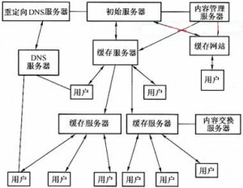
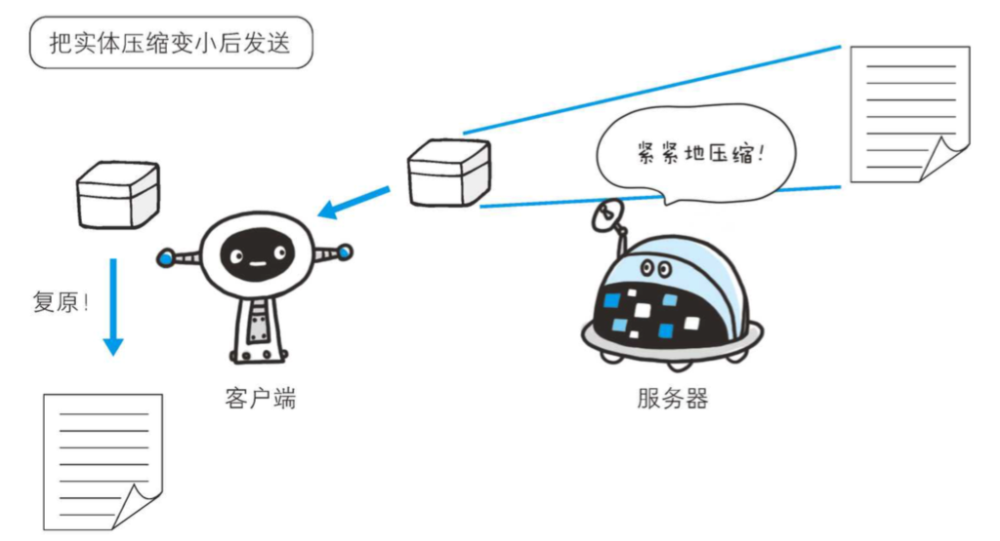

笔试的时候老是会看到一些关于前端优化的问题，这是个漫漫长路，先挖这个坑，以后慢慢填。
首先要搞清楚一个问题，前端性能优化，到底前端性能是什么？其实这个问题的答案可以很简单也可以很复杂，本人水平有限，姑且就将前端性能优化理解为让用户更快地看到页面，更快地操作页面。
总结起来就一个字：快！
雅虎军规
虽然很老，但是并没有过时，先加这一条笔记吧。
第一条.减少 HTTP 的请求数
- 合并 css，js 文件
- css sprites
- 首页的 css 和 js 内联处理
第二条.使用 CDN
将网站的内容发布到最接近用户的缓存服务器内，通过 DNS 负载均衡的技术，判断用户来源，让杭州的用户访问近杭州服务器上的内容，北京的访问 近北京服务器上的内容。

第三条.浏览器缓存
添加 Expire/Cache-Control 头。
|
第四条.Gzip 压缩
文件先在服务器端进行压缩，然后再传输。
客户端
|
服务端
|

第五条.css 放在页面顶部
在 css 加载完以前，IE 阻止页面显示，用户只能看到空白页；FireFox 不组织页面显示，有可能重绘，导致闪烁。
第六条.script 放在页面底部
- 防止 script 脚本的执行阻塞页面的下载。
- 它阻塞并行下载数量。